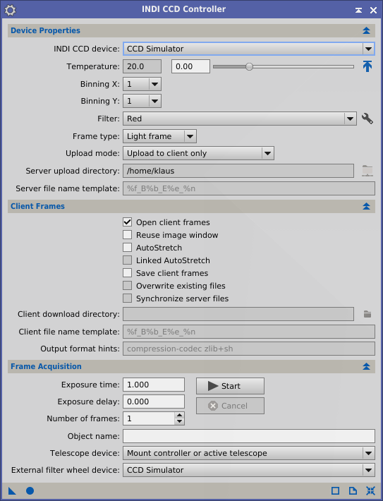

Keywords: INDI, Device, CCD, Automation, Control
1 Description
[hide]

With the INDI CCD Frame Controller module the PixInsight user will be able to aquire CCD frames locally or remotely from CCD devices which are connected to a running INDI server. So prerequisite for this module to work is a correctly configured INDI system with an INDI server running on a hardware where the astronomical devices are connected to (see [1] ).
The module allows to change CCD parameters like chip temperature, or binning mode by sending the corresponding control commands to the INDI server which delegates the request further to the connected devices. All devices which implement the INDI CCD device interface can be controlled by this module.
For example, there is an INDI CCD device driver for DSLR. Parameters which are typically not supported by DSLRs like chip temperature are disabled and cannot be changed. Parameters which are not supported by the INDI CCD interface like ISO cannot be changed by this module. To change those parameters use the INDI Device Controller Client (see [1] ) directly.
2 Usage
[hide]
The INDI CCD Frame Controller module contains three sections
-
Device Properties
-
- INDI CCD device: Specify the name of the device which correpond the CCD device to be controlled. The combo box contains all devices which have been selected while starting the INDI server. Before selecting the CCD device make sure that the INDI Device Controller Client has successfully connected to that device.
- Temperature: Specify the target chip temperature in degrees Celsius. Press the Arrow tool button to send the target chip temperature to the CCD device. This parameter is disabled if the CCD device does not support chip cooling.
- Binning X/Y: Specify the binning factor in X and Y direction. These parameter is disabled if the CCD device does not support binning.
- Filter: Specify a filter of an internal or external filter wheel. This parameter is disabled if the CCD camera does not have an internal filter wheel or no external filter wheel is selected (more info). Press the tool button to configure the filter names.
- Frame type: Specify the frame type. Frame types can be Light frame, Dark frame, or Flat frame. The frame type will be stored as FITS keword in the FITS header.
- Upload mode: The upload mode specifies how the acquired CCD frame will be handled by the client. There are three different upload modes:
- Upload to client only: The frame will be uploaded to the client and displayed in a separate image window. The frame will not be stored to the file system.
- Upload to INDI server only: The frame will be stored on the file system of the INDI server. The directory and filename can be set separately. The frame will not be uploaded to the client.
- Upload both: client and server: The frame will be uploaded to the client and displayed and stored on the file system of the server.
- Server upload directory: The directory where newly acquired CCD frames are stored on the INDI server.
- Server file name template: A template to build the file names that are stored on the INDI server.
Template specifier
|
will be replaced by
|
%f
|
Frame type (light, flat, dark, bias).
|
%F
|
Filter name.
|
%b
|
CCD binning with the format HxV, where H and V are, respectively, the horizontal and vertical binning factors.
|
%e
|
Exposure time in seconds.
|
%t
|
Acquisition date and time in the UTC time scale, ISO 8601 format.
|
%T
|
CCD temperature in degrees Celsius.
|
%d
|
Acquisition date in the UTC time scale, yyyy-mm-dd format.
|
%n
|
The frame number starting from one, with three digits and left-padded with zeros.
|
%u
|
A universally unique identifier (UUID) in canonical form (36 characters).
|
For example, the default template %f_B%b_E%e_%n would produce the following file name: LIGHT_B2x2_E300.00_002.fits for the second light frame of a series with exposure time of 300 seconds at binning 2x2.
-
Client Frames
-
- Open client frames: Select to open the newly acquired CCD frame after it was downloaded from the INDI server. This option is disabled if the Upload mode is set to Upload to INDI server only.
- Reuse image window: Load newly acquired client frames on the same image window, if available.
- AutoStretch: Compute and apply adaptive screen transfer functions (STF) on newly acquired client frames.
- Linked AutoStretch: If enabled, compute and apply a single adaptive STF for all nominal channels of each acquired color image. If disabled, compute a separate adaptive STF for each nominal color channel.
- Save client frames: Save newly acquired frames to local image files in XISF format. This option is disabled if the Upload mode is set to Upload to INDI server only.
- Overwrite existing files: If this option is selected, INDICCDFrame will overwrite existing files with the same names as generated output files. This can be dangerous because the original contents of overwritten files will be lost. Enable this option at your own risk.
- Synchronize server files: If this option is selected, INDICCDFrame will synchronize the newly acquired frames stored on the INDI server in the server side upload directory with the client download directory on the client side. The download of the files from the server is done asynchronously ,i.e. does not block the acquisition of the next frame during the download. This feature can only be used if the rsync tool is installed on the server and the client.
- Client download directory: The directory where newly acquired frames will be stored on the local filesystem. If you leave this parameter empty, new files will be created on the current downloads directory, as defined by global settings.
- Client file name template: A template to build the file names of newly acquired frames stored on the INDI client. See name template documenation for more details.
- Output format hints: Format hints allow you to override global file format settings for image files used by specific processes. In INDICCDFrame, output hints allow you to control the way newly acquired image files are generated on the INDI client. For example, you can use the compression-codec zlib hint to force the XISF format support module to compress images using the Zlib data compression algorithm. To gain more control on compression, you can use the compression-level n hint to specify a compression level n in the range from 0 (default compression) to 100 (maximum compression). See the XISF format documentation for detailed information on supported XISF format hints [5].
-
Frame Acquisition
-
Set the exposure duration and the number of frames to be acquired in one session run.
- Exposure Time: Exposure time in seconds.. Shortest exposure duration is 0.001 seconds, longest duration is 60000 seconds.
- Exposure Delay: Waiting time between exposures in seconds..
- Number of frames: Number of frames to be acquired.
- Object name: Name of the main astronomical object or subject in the acquired images. The specified text will be the value of Observation:Object:Name standard XISF properties and OBJECT FITS keywords in newly created light frames.
- Telescope device: This parameter tells INDICCDFrame how to select the telescope used for acquisition of light frames
- No telescope Newly acquired light frames won't have any property or keyword related to accurate observation coordinates. The OBJCTRA and OBJCDEC FITS keywords provided by INDI will be left intact. This option is not recommended unless you are acquiring test frames with a camera on a table, for example.
- Active telescope: Select the device specified as the ACTIVE_DEVICES/ACTIVE_TELESCOPE property of the INDI CCD device being used. You must define this property manually with the INDI Device Controller [1] with the name of the appropriate telescope device.
- Mount controller telescope: Use the device currently selected in the INDI Mount Controller interface.
- Mount controller or active telescope: Use the INDI Mount Controller device if available, or the ACTIVE_DEVICES/ACTIVE_TELESCOPE device otherwise. This is the default option.
When a telescope device is available, it is used to retrieve its current EOD (epoch of date) coordinates, just before starting each light frame exposure. These are apparent coordinates, which are reduced to mean positions referred to the mean equinox and equator of J2000.0 (ICRS) by an accurate inverse transformation, including corrections for precession, nutation and stellar aberration. The computed coordinates are directly comparable to standard catalog positions, irrespective of the date of acquisition. Once these coordinates are computed for each acquired image, they are stored as standard XISF properties (Observation:Center:RA and Observation:Center:Dec). For compatibility with legacy applications, the same coordinates replace the OBJCTRA and OBJCTDEC FITS keywords provided by the INDI server. Note that these properties simplify the plate solving process, since e.g. the Image Solver script [6], automatically determines necessary parameters from the frame.
- External filter wheel device: Specify the device name of an external filter wheel here, if the CCD device does not have an integrated filter wheel.
A running exposure session can be canceld by pressing the Cancel push button. This will send an abort event to the INDI server to abort the remote exposure process.
Copyright © 2014-2018 Klaus Kretzschmar